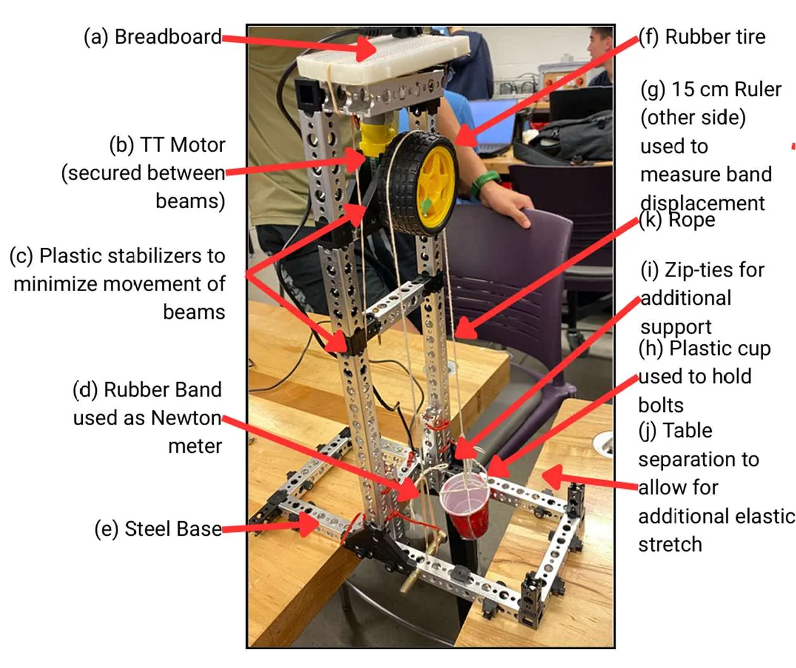
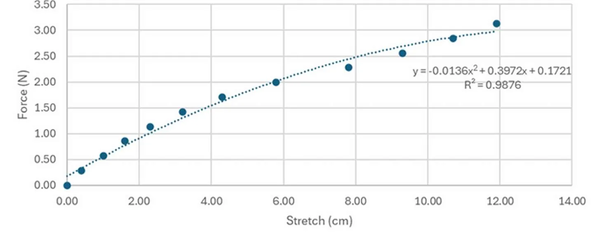

Motor dynamometer
A test rig to characterize a small DC motor's torque–speed performance, using a rubber band calibrated as a force gauge.
- Context
- First-year design course
- Timeframe
- Sep 2025 to Apr 2026
- Focus
- Test design, calibration, data analysis
- Tools
- Excel, test rig hardware
Overview
I designed a dynamometer setup to measure motor torque–speed performance, developed the test procedure, calibrated the components and collected the data.
The course this was for, and whether it was a team project.
Test setup
A TT motor is clamped between metal beams at the top of a steel-based frame, driving a rubber tire. A rope runs from the drive down to a rubber band that acts as the force gauge; a 15 cm ruler on the back of the frame measures how far the band stretches. Plastic stabilizers and zip-ties keep the beams from moving, and a gap between tables leaves room for the band to stretch.


Calibrating the force gauge
Before the band could measure force, it had to be calibrated. Loading it with known weights gave a force–stretch curve, which is nonlinear: a quadratic fit matches the data closely (R² = 0.9876).


Results
The calibrated rig was used to measure and compare the motor's mechanical performance across operating conditions.
The torque–speed curve you measured, stall torque or no-load speed if you have them, and what the results told you.